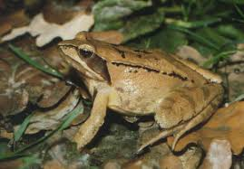

To płaz bezogonowy z rodziny żabowatych. Żaba moczarowa występuje w Europie Środkowej,
Wschodniej i Północnej oraz części Azji. Obecna jest także w Polsce. Jest u nas dość pospolita. Preferuje
niziny. Pionowy zasięg występowania to zaledwie 800 m n.p.m. Zamieszkuje tereny otwarte, suche lasy sosnowe,
ogrody, parki miejskie. Poza okresem godów prowadzi lądowy tryb życia. Zimuje na lądzie. Preferuje tereny
nizinne.
WYGLĄD
Pysk jest ostro zakończony. U kończyn tylnych znajduje się jeden modzel podeszwowy.
Gatunek ten z wyglądu bardzo przypomina żabę trawną. Cechą charakterystyczną są ciemne plamy skroniowe,
plama kątowa na grzbiecie, pręgi na kończynach tylnych. Na białym brzuchu nie ma plam, co ją odróżnia od
żaby trawnej. Występuje bardzo duża różnorodność ubarwienia różnych osobników. U samców występują worki
rezonacyjne. W okresie godów samce mają niebieskawy grzbiet, plamę niebieską na gardzieli oraz zwisające
fałdy. U samic kolor skóry staje się w tym okresie bardziej jaskrawy. Samce są mniejsze od samic. Na tylnych
kończynach mogą występować poprzeczne prążki.
Oczy są duże i wystające. Tęczówki są złociste, a owalne źrenice są poziome. Nie występują parotydy.
Widoczne są błony bębenkowe. Palce spinają wcięte błony pławne. Po obu bokach grzbietu biegną dwie podłużne
listwy skórne. Skóra na spodnich częściach ud i na części brzucha jest lekko przezroczysta. Widać przez nią
mięśnie i wnętrzności. W porze rozrodu samce są zaopatrzone w modzele godowe na pierwszych palcach przednich
kończyn. Samce posiadają parzyste wewnętrzne rezonatory.
OKRES GODOWY
Samce w porze godów wydają odgłos kwilenia. Jest aktywna w dzień.
Pora godowa rozpoczyna się w kwietniu. Samica składa skrzek w postaci kulistych kłębów do
zbiorników z wodą stojącą, najlepiej porośniętych pałką wodną, sitowiem, trzciną zwyczajną, o pH nie niższym
niż 4,5, na głębokości od 10 cm do 2 m. Gody odbywają się masowo. Samce przypierają wówczas niebieskie
zabarwienie. Są ich wówczas setki. Samica może znieść od 500 do 2700 jaj o średnicy 1,5-2 mm, a z otoczką
6-8 mm. Kijanki wykluwają się po 14-25 dniach. Kijanki są ciemnobrązowe i osiągają długość 4,8 cm. Małe
żabki po przeobrażeniu mają długość 1-1,5 cm.
POŻYWIENIE
Zjada stawonogi, dżdżownice i ślimaki, pająki.
OCHORNA I ZAGROŻENIE
Gatunek ten nie jest zagrożony wymarciem. Ma status LC w Czerwonej Księdze Gatunków
Zagrożonych. W Polsce żaba moczarowa znajduje się pod całkowitą ochroną.
ŻABA TRAWNA
to rodzimy przedstawiciel rodziny żabowatych o zmiennym ubarwieniu. Występuje na
północnych i środkowych obszarach Europy i Azji.
Zamieszkuje tereny za kołem podbiegunowym. W Polsce jest dość pospolita. Jest odporna na działanie niskich
temperatur, stąd występuje na wysokości nawet 3000 m n.p.m. w Pirenejach. Zamieszkuje bardzo różne, wilgotne
środowiska. Można ją spotkać w lasach, na łąkach. Rozmnaża się w jeziorach, stawach, rozlewiskach i
kałużach. Poza okresem rozmnażania dorosłe osobniki przebywają na lądzie, najczęściej w lasach. Jest aktywna
w nocy i wieczorem. Zimę spędza na dnie wód płynących. Do zbiorników rozrodczych potrafią przewędrować nawet
kilka kilometrów.
WYGLĄD
Najczęściej skóra jest brązowa i oliwkowozielona. Na ciele występują brązowe lub czarne
plamy. Charakterystyczne są dla tego gatunku ciemne plamy skroniowe, plama na środku grzbietu, na udach
poprzeczne, ciemne pręgi. Linia kręgowa nie jest widoczna. Na brzuchu znajduje się deseń mozaikowy. U samców
znajdują się parzyste rezonatory, a także modzele na pierwszych palcach kończyn przednich. U samców pojawia
się szata godowa. Jest to niebieskawa plama na gardzieli, niebieskawy grzbiet oraz zwisające fałdy skórne
wypełnione limfą. Samice przybierają bardziej jaskrawą szatę, pojawiają się brodawki na grzbiecie.
Palce stóp są spięte błoną pławną. Od żaby moczarowej różni się kształtem pyska (jest krótszy i zaokrąglony)
i wyglądem modzeli piętowych wewnętrznych. Błony bębenkowe są widoczne, duże, wielkości oczu. Na bokach
ciała znajdują się dwa fałdy grzbietowe.
OKRES GODOWY
Podczas godów samce wydają ciche odgłosy przypominające mruczenie. Pora godowa zaczyna
się pod koniec marca, kończy się w kwietniu. Samica składa skrzek w postaci kulistych, regularnych kłębów.
Samica składa od 900 do 4000 jaj. Jaja mają średnicę 1,7-3 mm, a z galaretowatą otoczką 8-10 mm. Larwy
wykluwają się po 10-14 dniach lub po miesiącu, gdy temperatury są niskie. Kijanki dorastają do 5,2 cm
długości. Po przeobrażeniu młode żabki mają 1-1,5 cm długości.
POŻYWIENIE
Zjada owady, także stawonogi, dżdżownice i ślimaki.
OCHORNA I ZAGROŻENIE
Gatunek ten nie jest zagrożony wymarciem. Ma status LC w Czerwonej Księdze Gatunków
Zagrożonych. W Polsce znajduje się pod całkowitą ochroną prawną.
ŻABA ZWINKA (dalmatyńska)

to płaz z rodziny żabowatych. Zamieszkuje różne tereny w Europie. Można ją spotkać w
Polsce, ale jest wyjątkowo rzadkim gatunkiem w naszym kraju (nawet kwestionowane jest czasem występowanie w
naszym kraju). Można ją spotkać w Kotlinie Sandomierskiej, w okolicach Przemyśla, Dębicy i Nowego Brzeska.
Występuje także w południowej części Azji Mniejszej. Pionowy zasięg występowania to 1720 m n.p.m. Lubi
miejsca dość suche, dobrze nasłonecznione, lasy liściaste, łąki, zręby, lasy bagienne.
Prowadzi lądowy i dzienny tryb życia. Oddala się od zbiornika wodnego maksymalnie na 2
km. Porusza się skokami. Samce wydają ciche odgłosy, przypominające mruknięcia. Zimuje na dnie zbiorników
wodnych (samce) lub na lądzie (samice) między wrześniem-październikiem a styczniem-lutym. Nie jest dobrym
pływakiem.
Żaba dalmatyńska potrafi skoczyć na odległość 2 m i wysokość 1 m.
WYGLĄD
Ma szpicowaty pysk, bardzo długie kończyny tylne, poziome źrenice oczu, duże błony
bębenkowe. Skóra ma z wierzchu brązowy kolor, na głowie są ciemne plamy skroniowe, za głową na grzbiecie
plama kątowa w kształcie litery "V". Brzuszna strona jest ubarwiona biało, bez plam. Na tylnych kończynach
znajdują się poprzeczne plamy w ciemnym kolorze. Szata godowa nie występuje.
Oczy są złociste lub miedziane i mają poziome źrenice. Parotydy nie występują. Dobrze widoczne są duże błony
bębenkowe o średnicy porównywalnej ze średnicą oczu. Na spodniej stronie stóp występują duże modzele. Brak
rezonatorów u samców. Wzdłuż fałdów grzbietowych mogą występować ciemne linie. Samce w okresie godów
posiadają ciemne modzele godowe na palcach przednich kończyn.
OKRES GODOWY
Okres godowy rozpoczyna się w kwietniu. Żaba dalmatyńska rozmnaża się w zbiornikach wody
stojącej lub płynącej. Samice składają skrzek, który ma postać kulistych, galaretowatych brył. Samica znosi
od 400 do 1800 jaj o średnicy 1,5-2 mm, a z galaretowatą osłonką 9-12 mm. Po 3 tygodniach wykluwają się
kijanki. Kijanki dorastają do 6 cm długości, a osobniki po przeobrażeniu mają około 2 cm. Kijanki są
brązowe, mają ciało wydłużone, ogon jest smukły.
POŻYWIENIE
Zjada dżdżownice, pająki, owady i inne stawonogi oraz ślimaki.
OCHORNA I ZAGROŻENIE
Gatunek ten nie jest zagrożony wymarciem. Ma status LC w Czerwonej Księdze Gatunków Zagrożonych. W Polsce żaba dalmatyńska jest pod całkowitą ochroną, ponieważ w naszym kraju jest bardzo rzadka i występuje na małym obszarze.